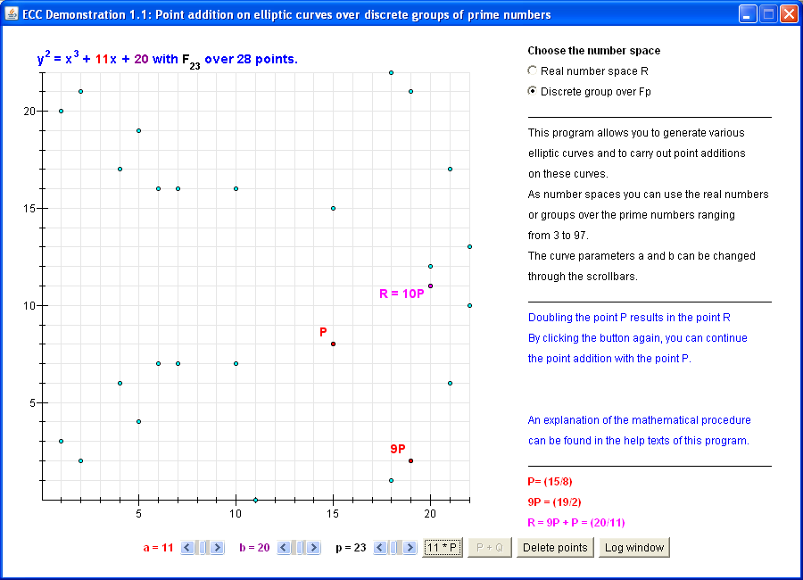

This program allows you to generate various elliptic curves and to carry out point additions on these curves.
As number spaces you can use the real numbers or groups over the prime numbers ranging from 3 to 97.
By opening the non-modal window for the log output you can simultaneously track your actions (like consecutive point additions).
Remark Successor Version Java-CrypTool (JCT):
Using JCT you cannot only calculate and visualize
1. Curves in the real number space, and
2. Curves in the field F(p), but also
3. Curves in the field F(2^m).